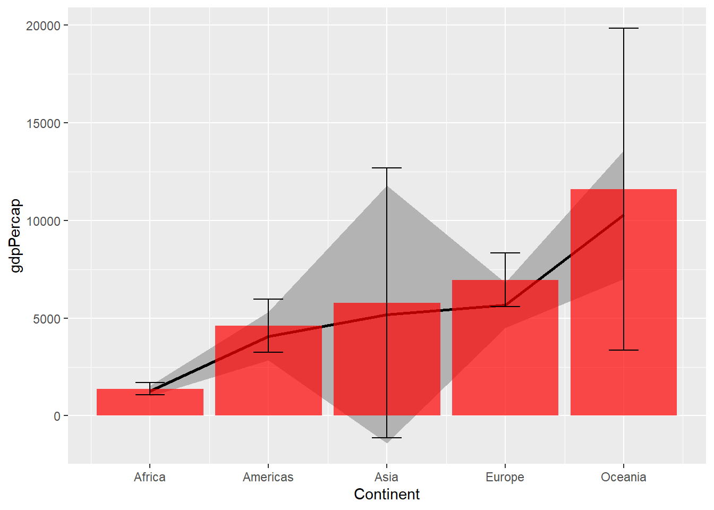
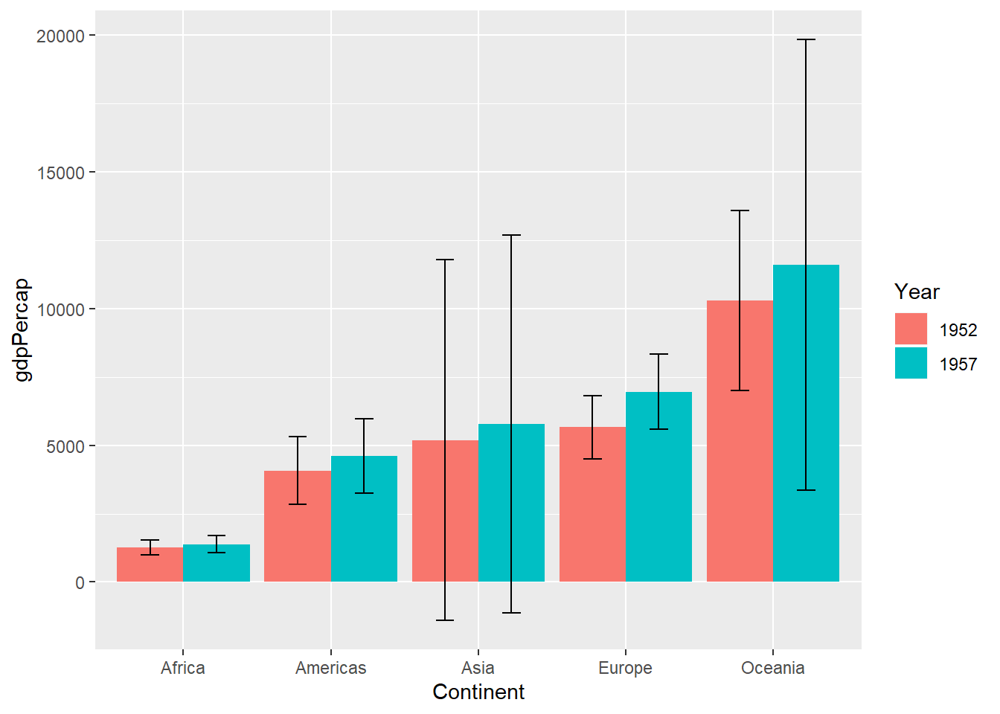
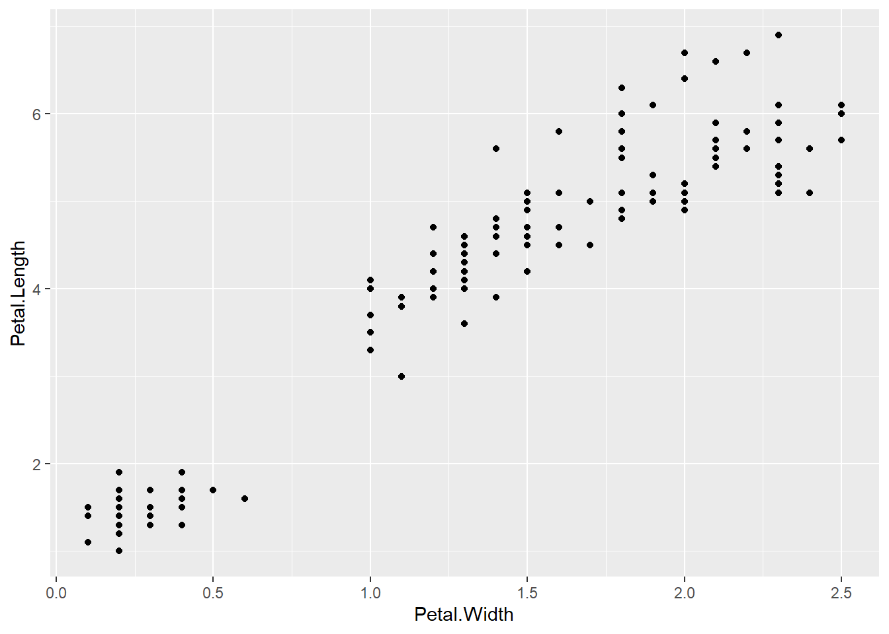
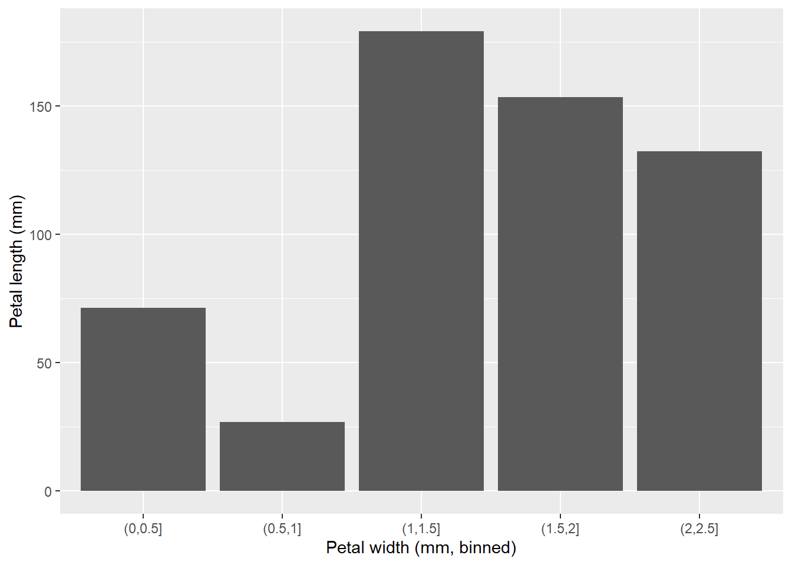
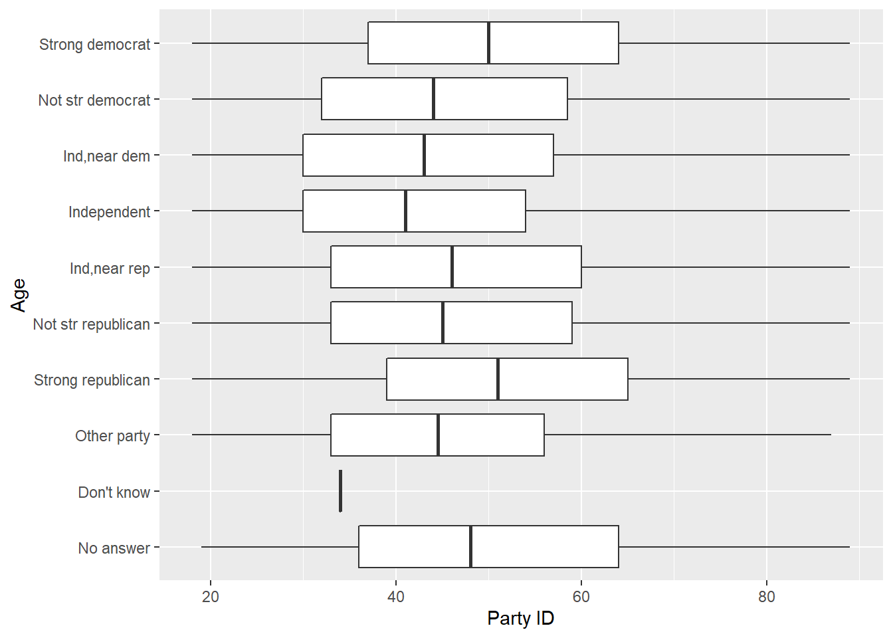
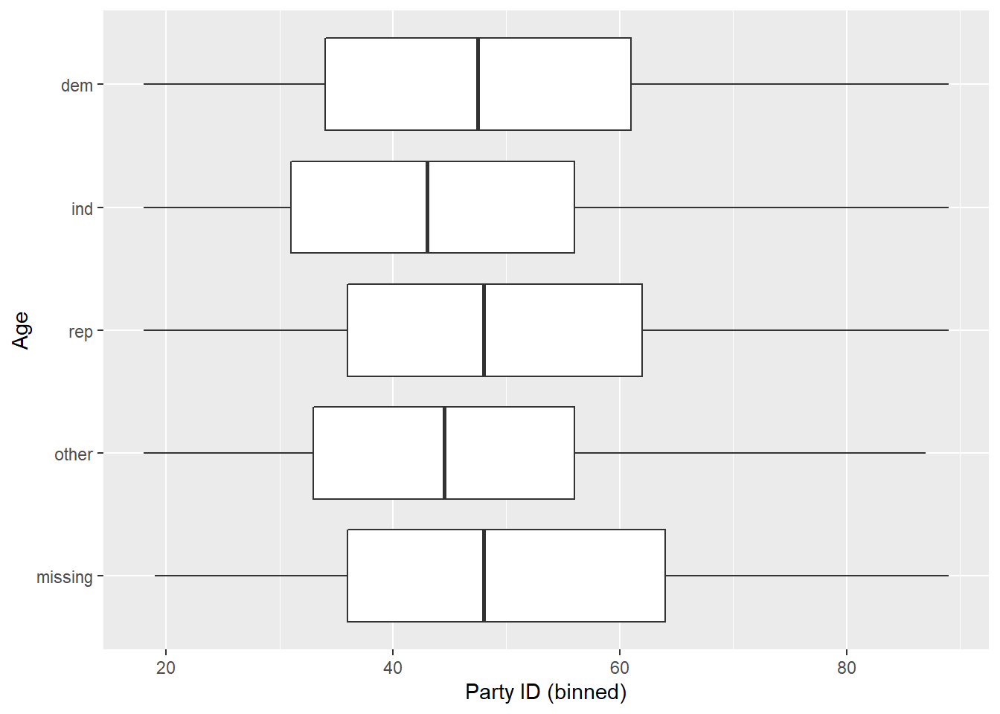

Regular expressions and simple models
EXGEN5449 - Winter 2020
Stefan Schreiber
1 Regular expressions
As we saw yesterday regular expressions can save you a lot of time, if you put some effort into understanding how they work. They certainly look intimidating at first but you get used to it. For today we keep on working with regular expressions a bit more because I found a great R Studio Addin that helps you understanding them and get a taste for what is possible! The package is currently only available on GitHub. In order to download packages from GitHub you first need to download the devtools package. Once you have downloaded it, you can install packages straight from GitHub. The package we will using is called regexplain and can be found here. Have a look at the README file. To install the package run:
Now you will have REGEXPLAIN in your Addins drop down menu (below the Tools menu). Another great resource for testing your regular expressions are these two website: https://regex101.com/ and https://www.regular-expressions.info/
I also wanted to share with you the regex example I showed you yesterday. Instead of sending or downloading CSV files, you could also read out the data frame you are working with using the dput() function. Then you can simply copy/paste the output into an email and send it to your collaborator for example. This also very helpful when you ask a question on those QA sites such as StackOverflow as they always want a reproducible example but at the same time will not download any files on there own computers. Once you share the dput() output, the recipient can simply copy/paste it into their own R console and recreate your data frame that way. Below I did the same. Simply copy/paste those two blocks of code into your console and you have those data sets ready.
require(tidyverse)
d1 <- structure(list(Treatment = structure(1:3, .Label = c("a", "b",
"c"), class = "factor"), Height_7days = c(0.241756922, 0.017613771,
0.913951358), Height.14days = c(0.557475118, 0.115967094, 0.276483941
), Height21days = c(0.882937228, 0.664116205, 0.110760574), Weight_7days = c(0.014404525,
0.591611048, 0.365071975), Weight..14days = c(0.365071975, 0.46561814,
0.943144072), Weight_21days = c(0.420476422, 0.86572502, 0.911250316
)), class = "data.frame", row.names = c(NA, -3L))
d2 <- structure(list(Treatment = c("a", "b", "c"), Height_7days = c(0.241756922,
0.017613771, 0.913951358), `Height 14days` = c(0.557475118, 0.115967094,
0.276483941), Height21days = c(0.882937228, 0.664116205, 0.110760574
), Weight_7days = c(0.014404525, 0.591611048, 0.365071975), `Weight 14days` = c(0.365071975,
0.46561814, 0.943144072), Weight_21days = c(0.420476422, 0.86572502,
0.911250316)), class = c("spec_tbl_df", "tbl_df", "tbl", "data.frame"
), row.names = c(NA, -3L), spec = structure(list(cols = list(
Treatment = structure(list(), class = c("collector_character",
"collector")), Height_7days = structure(list(), class = c("collector_double",
"collector")), `Height 14days` = structure(list(), class = c("collector_double",
"collector")), Height21days = structure(list(), class = c("collector_double",
"collector")), Weight_7days = structure(list(), class = c("collector_double",
"collector")), `Weight 14days` = structure(list(), class = c("collector_double",
"collector")), Weight_21days = structure(list(), class = c("collector_double",
"collector"))), default = structure(list(), class = c("collector_guess",
"collector")), skip = 1), class = "col_spec"))
d1
#> Treatment Height_7days Height.14days Height21days Weight_7days Weight..14days Weight_21days
#> 1 a 0.24175692 0.5574751 0.8829372 0.01440452 0.3650720 0.4204764
#> 2 b 0.01761377 0.1159671 0.6641162 0.59161105 0.4656181 0.8657250
#> 3 c 0.91395136 0.2764839 0.1107606 0.36507197 0.9431441 0.9112503
d2
#> # A tibble: 3 x 7
#> Treatment Height_7days `Height 14days` Height21days Weight_7days `Weight 14days` Weight_21days
#> <chr> <dbl> <dbl> <dbl> <dbl> <dbl> <dbl>
#> 1 a 0.242 0.557 0.883 0.0144 0.365 0.420
#> 2 b 0.0176 0.116 0.664 0.592 0.466 0.866
#> 3 c 0.914 0.276 0.111 0.365 0.943 0.911
# the regex below in the extract() function is universal enough to match both scenarios (read.csv and read_csv)
# there are also shorthand versions of this regex but I use this one as it is more clear to me
# this is where I got the idea from: https://stackoverflow.com/questions/25925556/gather-multiple-sets-of-columns
# see also ?regex
# run each line individually to see what the function are doing
d1 %>% pivot_longer(names_to = "key", values_to = "value", - Treatment) %>%
extract(key, c("parameter", "Days"), "([[:alpha:]]+)[[:space:][:punct:]]*([[:digit:]]+)") %>%
pivot_wider(names_from = parameter, values_from = value)
#> # A tibble: 9 x 4
#> Treatment Days Height Weight
#> <fct> <chr> <dbl> <dbl>
#> 1 a 7 0.242 0.0144
#> 2 a 14 0.557 0.365
#> 3 a 21 0.883 0.420
#> 4 b 7 0.0176 0.592
#> 5 b 14 0.116 0.466
#> 6 b 21 0.664 0.866
#> 7 c 7 0.914 0.365
#> 8 c 14 0.276 0.943
#> 9 c 21 0.111 0.911
d2 %>% pivot_longer(names_to = "key", values_to = "value", - Treatment) %>%
extract(key, c("parameter", "Days"), "([[:alpha:]]+)[[:space:][:punct:]]*([[:digit:]]+)") %>%
pivot_wider(names_from = parameter, values_from = value)
#> # A tibble: 9 x 4
#> Treatment Days Height Weight
#> <chr> <chr> <dbl> <dbl>
#> 1 a 7 0.242 0.0144
#> 2 a 14 0.557 0.365
#> 3 a 21 0.883 0.420
#> 4 b 7 0.0176 0.592
#> 5 b 14 0.116 0.466
#> 6 b 21 0.664 0.866
#> 7 c 7 0.914 0.365
#> 8 c 14 0.276 0.943
#> 9 c 21 0.111 0.911Here is another regex example how to clean up messy files (example data from Tomas):
require(tidyverse)
require(lubridate)
d3 <- structure(list(X1 = c("01-01-01", "01-02-01", "01-03-01", "01-04-01",
"01-05-01", "01-06-01", "01-07-01", "01-08-01", "01-09-01", "01-10-01",
"01-11-01", "01-12-01", "01-01-02", "01-02-02", "01-03-02", "01-04-02",
"01-05-02", "01-06-02", "01-07-02", "01-08-02", "01-09-02"),
NAICS = c("11", "11A", "22", "23C", "31-33", "31-33", "31-33",
"31-33", "31-33", "31-33", "31-33", "41", "51", "61", "51C",
"71", "81", "91", "91", "91", "91"), Persons = c("100F",
"120A", "96", "19", "89", "54", "81", "92", "86", "57B",
"76", "5", "91", "7", "30", "77", "22", "32", "77", "48",
"32"), Wages = c("..", "N/A", "120", "80", "na", NA, "Na",
"30", "nA", "15", "17", "83", "36", "N/A", "43", "..", "14",
"11", "N/A", "..", "77")), class = c("spec_tbl_df", "tbl_df",
"tbl", "data.frame"), row.names = c(NA, -21L), spec = structure(list(
cols = list(X1 = structure(list(), class = c("collector_character",
"collector")), NAICS = structure(list(), class = c("collector_character",
"collector")), Persons = structure(list(), class = c("collector_character",
"collector")), Wages = structure(list(), class = c("collector_character",
"collector"))), default = structure(list(), class = c("collector_guess",
"collector")), skip = 1), class = "col_spec"))Using str_view() we can see what the regex is matching. Then we can either str_extract() or str_replace(). If there is one simply pattern of what you want to keep, then use str_extract(). On the other hand sometimes it makes more sense to use str_replace (see example below).
str_view(d3$NAICS, "\\d+") # see the matches
str_extract(d3$NAICS, "\\d+") # we can use str_extract here to pull out what we want
# we can apply the same logic here:
str_view(d3$Persons, "\\d+") # see the matches
str_extract(d3$Persons, "\\d+") # we can use str_extract here to pull out what we want
# finding various types of NAs. Here it's better to identify a common pattern and replace it with nothing
str_view(d3$Wages, "\\.+|[nN/aA]+") # see the matches
str_replace(d3$Wages, "\\.+|[nN/aA]+", "")Now this works for this data set, so let’s proceed and fix it up.
# clean data
d3 %>%
rename(Date = X1) %>%
# first I change `Date` to an actual date object using `ymd()` from the `lubridate` package
mutate(Date = ymd(Date),
NAICS = str_extract(NAICS, "\\d+"),
Persons = str_extract(Persons, "\\d+"),
Wages = str_replace(Wages, "\\.+|[nN/aA]+", "")) %>%
# mutate_at will apply a function to specific variables
# in this case we need to change from `character` to `double` (or numeric)
# see `?mutate_at` for details
mutate_at(.vars = vars(NAICS, Persons, Wages), .funs = as.double) %>%
# with `print` you can change how many rows you want to see (default is 10)
print(n = 40)
#> # A tibble: 21 x 4
#> Date NAICS Persons Wages
#> <date> <dbl> <dbl> <dbl>
#> 1 2001-01-01 11 100 NA
#> 2 2001-02-01 11 120 NA
#> 3 2001-03-01 22 96 120
#> 4 2001-04-01 23 19 80
#> 5 2001-05-01 31 89 NA
#> 6 2001-06-01 31 54 NA
#> 7 2001-07-01 31 81 NA
#> 8 2001-08-01 31 92 30
#> 9 2001-09-01 31 86 NA
#> 10 2001-10-01 31 57 15
#> 11 2001-11-01 31 76 17
#> 12 2001-12-01 41 5 83
#> 13 2001-01-02 51 91 36
#> 14 2001-02-02 61 7 NA
#> 15 2001-03-02 51 30 43
#> 16 2001-04-02 71 77 NA
#> 17 2001-05-02 81 22 14
#> 18 2001-06-02 91 32 11
#> 19 2001-07-02 91 77 NA
#> 20 2001-08-02 91 48 NA
#> 21 2001-09-02 91 32 77We also talked about the fill() function from the dplyr package. Very handy function! Put it in your tool box! Here is an example:
(d4 <- tibble(Country = c("Western Canada", NA, NA, "Central Canada", NA, NA),
Province = c("BC", "AB", "SK","MB", "ON", "QC")))
#> # A tibble: 6 x 2
#> Country Province
#> <chr> <chr>
#> 1 Western Canada BC
#> 2 <NA> AB
#> 3 <NA> SK
#> 4 Central Canada MB
#> 5 <NA> ON
#> 6 <NA> QC
d4 %>%
fill(Country)
#> # A tibble: 6 x 2
#> Country Province
#> <chr> <chr>
#> 1 Western Canada BC
#> 2 Western Canada AB
#> 3 Western Canada SK
#> 4 Central Canada MB
#> 5 Central Canada ON
#> 6 Central Canada QCNow I want to share another great data set with you. You can find it in the gapminder package:
To change things up a bit let’s watch a quick movie about this data set: https://www.youtube.com/watch?v=jbkSRLYSojo
The gapminder data set is a subset of the data presented in the video. Now, it’s your turn again! Take the data set and turn it upside down.
2 Analysis of variance
m1 <- aov(lifeExp ~ continent, data = gapminder)
summary(m1) # Significant continent effect
#> Df Sum Sq Mean Sq F value Pr(>F)
#> continent 4 139343 34836 408.7 <2e-16 ***
#> Residuals 1699 144805 85
#> ---
#> Signif. codes: 0 '***' 0.001 '**' 0.01 '*' 0.05 '.' 0.1 ' ' 1
# emmeans package great for doing posthoc comparisons
require(emmeans)
#> Loading required package: emmeans
#> Welcome to emmeans.
#> NOTE -- Important change from versions <= 1.41:
#> Indicator predictors are now treated as 2-level factors by default.
#> To revert to old behavior, use emm_options(cov.keep = character(0))
(mean_comparisons <- emmeans(m1, "continent"))
#> continent emmean SE df lower.CL upper.CL
#> Africa 48.9 0.370 1699 48.1 49.6
#> Americas 64.7 0.533 1699 63.6 65.7
#> Asia 60.1 0.464 1699 59.2 61.0
#> Europe 71.9 0.487 1699 70.9 72.9
#> Oceania 74.3 1.884 1699 70.6 78.0
#>
#> Confidence level used: 0.95
(tukey_comparisons <- CLD(mean_comparisons, Letters = letters))
#> Warning: 'CLD' will be deprecated. Its use is discouraged.
#> See '? CLD' for an explanation. Use 'pwpp' or 'multcomp::cld' instead.
#> continent emmean SE df lower.CL upper.CL .group
#> Africa 48.9 0.370 1699 48.1 49.6 a
#> Asia 60.1 0.464 1699 59.2 61.0 b
#> Americas 64.7 0.533 1699 63.6 65.7 c
#> Europe 71.9 0.487 1699 70.9 72.9 d
#> Oceania 74.3 1.884 1699 70.6 78.0 d
#>
#> Confidence level used: 0.95
#> P value adjustment: tukey method for comparing a family of 5 estimates
#> significance level used: alpha = 0.05
tukey_comparisons$.group2 <- trimws(tukey_comparisons$.group)
ggplot(tukey_comparisons, aes(x = continent, y = emmean)) +
geom_pointrange(aes(ymin = lower.CL, ymax = upper.CL)) +
geom_text(aes(x = continent, y = upper.CL + 2, label = .group2)) +
labs(x = "Continent", y = "Mean Life Expectancy")
ggplot(tukey_comparisons, aes(x = continent, y = emmean)) +
geom_col(fill = "grey60") +
geom_errorbar(aes(ymin = lower.CL, ymax = upper.CL), width = 0.25) +
geom_text(aes(x = continent, y = upper.CL + 3, label = .group2)) +
labs(x = "Continent", y = "Mean Life Expectancy")
3 Linear regression
gapminder %>%
filter(continent == "Europe") -> europe
m2 <- lm(lifeExp ~ gdpPercap, europe)
m2
#>
#> Call:
#> lm(formula = lifeExp ~ gdpPercap, data = europe)
#>
#> Coefficients:
#> (Intercept) gdpPercap
#> 6.534e+01 4.535e-04
summary(m2)
#>
#> Call:
#> lm(formula = lifeExp ~ gdpPercap, data = europe)
#>
#> Residuals:
#> Min 1Q Median 3Q Max
#> -22.6504 -1.2783 0.1333 2.0302 8.3884
#>
#> Coefficients:
#> Estimate Std. Error t value Pr(>|t|)
#> (Intercept) 6.534e+01 3.303e-01 197.82 <2e-16 ***
#> gdpPercap 4.534e-04 1.918e-05 23.64 <2e-16 ***
#> ---
#> Signif. codes: 0 '***' 0.001 '**' 0.01 '*' 0.05 '.' 0.1 ' ' 1
#>
#> Residual standard error: 3.399 on 358 degrees of freedom
#> Multiple R-squared: 0.6096, Adjusted R-squared: 0.6085
#> F-statistic: 559.1 on 1 and 358 DF, p-value: < 2.2e-16
ggplot(europe, aes(gdpPercap, lifeExp)) +
geom_point() +
geom_smooth(method = "lm") +
labs(x = "GDP per capita", y = "Life Expectancy")
# predict some new data from the model
new_data <- tibble(gdpPercap = c(20000, 30000, 40000, 50000))
new_data
#> # A tibble: 4 x 1
#> gdpPercap
#> <dbl>
#> 1 20000
#> 2 30000
#> 3 40000
#> 4 50000
predict(m2, new_data, interval = "prediction")
#> fit lwr upr
#> 1 74.41151 67.71368 81.10934
#> 2 78.94602 72.22587 85.66618
#> 3 83.48053 76.71706 90.24401
#> 4 88.01505 81.18767 94.842434 Multiple models
Also check out the chapter Many Models in the R for Data Science book.
gapminder %>%
group_by(country, continent) %>%
nest() -> gapm_country
gapm_country
#> # A tibble: 142 x 3
#> # Groups: country, continent [710]
#> country continent data
#> <fct> <fct> <list<df[,4]>>
#> 1 Afghanistan Asia [12 x 4]
#> 2 Albania Europe [12 x 4]
#> 3 Algeria Africa [12 x 4]
#> 4 Angola Africa [12 x 4]
#> 5 Argentina Americas [12 x 4]
#> 6 Australia Oceania [12 x 4]
#> 7 Austria Europe [12 x 4]
#> 8 Bahrain Asia [12 x 4]
#> 9 Bangladesh Asia [12 x 4]
#> 10 Belgium Europe [12 x 4]
#> # ... with 132 more rows
# And then run the lm function only once!
gapm_country %>%
mutate(model = purrr::map(data, ~ lm(lifeExp ~ year, data = .x))) -> country_model
country_model
#> # A tibble: 142 x 4
#> # Groups: country, continent [710]
#> country continent data model
#> <fct> <fct> <list<df[,4]>> <list>
#> 1 Afghanistan Asia [12 x 4] <lm>
#> 2 Albania Europe [12 x 4] <lm>
#> 3 Algeria Africa [12 x 4] <lm>
#> 4 Angola Africa [12 x 4] <lm>
#> 5 Argentina Americas [12 x 4] <lm>
#> 6 Australia Oceania [12 x 4] <lm>
#> 7 Austria Europe [12 x 4] <lm>
#> 8 Bahrain Asia [12 x 4] <lm>
#> 9 Bangladesh Asia [12 x 4] <lm>
#> 10 Belgium Europe [12 x 4] <lm>
#> # ... with 132 more rows
# Using the `tidy()` function from the `broom` package we can see each model result in one data frame!
country_model %>%
mutate(tidy_models = purrr::map(model, broom::tidy)) %>% # replace with `broom::augment` and `broom::glance`
unnest(tidy_models) -> model_summary
model_summary
#> # A tibble: 284 x 9
#> # Groups: country, continent [710]
#> country continent data model term estimate std.error statistic p.value
#> <fct> <fct> <list<df[,4]>> <list> <chr> <dbl> <dbl> <dbl> <dbl>
#> 1 Afghanistan Asia [12 x 4] <lm> (Intercept) -508. 40.5 -12.5 1.93e- 7
#> 2 Afghanistan Asia [12 x 4] <lm> year 0.275 0.0205 13.5 9.84e- 8
#> 3 Albania Europe [12 x 4] <lm> (Intercept) -594. 65.7 -9.05 3.94e- 6
#> 4 Albania Europe [12 x 4] <lm> year 0.335 0.0332 10.1 1.46e- 6
#> 5 Algeria Africa [12 x 4] <lm> (Intercept) -1068. 43.8 -24.4 3.07e-10
#> 6 Algeria Africa [12 x 4] <lm> year 0.569 0.0221 25.7 1.81e-10
#> 7 Angola Africa [12 x 4] <lm> (Intercept) -377. 46.6 -8.08 1.08e- 5
#> 8 Angola Africa [12 x 4] <lm> year 0.209 0.0235 8.90 4.59e- 6
#> 9 Argentina Americas [12 x 4] <lm> (Intercept) -390. 9.68 -40.3 2.14e-12
#> 10 Argentina Americas [12 x 4] <lm> year 0.232 0.00489 47.4 4.22e-13
#> # ... with 274 more rows5 For Allison
require(gapminder)
require(tidyverse)
gapminder %>%
group_by(continent, year) %>%
summarize(M = mean(gdpPercap), SE = error(gdpPercap)) -> new_d
new_d %>%
ggplot() +
geom_ribbon(
data = filter(new_d, year == 1952),
aes(
x = as.numeric(continent),
ymin = M - SE,
ymax = M + SE
),
fill = "grey70"
) +
geom_line(data = filter(new_d, year == 1952),
aes(as.numeric(continent), M),
size = 1) +
geom_col(
data = filter(new_d, year == 1957),
aes(as.numeric(continent), M),
alpha = 0.7,
fill = "red"
) +
geom_errorbar(
data = filter(new_d, year == 1957),
aes(
as.numeric(continent),
ymin = M - SE,
ymax = M + SE
),
width = .25
) +
scale_x_continuous(breaks = 1:5, labels = levels(new_d$continent)) +
labs(x = "Continent", y = "gdpPercap")
new_d %>%
filter(year %in% c(1952, 1957)) %>%
ggplot(aes(continent, M, group = year)) +
geom_col(aes(fill = factor(year)), position = "dodge") +
geom_errorbar(aes(ymin = M - SE, ymax = M + SE),
width = 0.25,
position = position_dodge(.9)) +
labs(x = "Continent", y = "gdpPercap", fill = "Year")
6 For Lisa
# d <- read_csv("Book1.csv", col_names = FALSE) # make sure to set col_names = FALSE
d2 <- structure(
list(
X1 = c(1996, NA, NA, NA, NA, NA, 1997, NA, NA,
NA, NA),
X2 = c(NA, 1, 2, 1, 2, 3, NA, 4, 2, 3, 4)
),
class = c("spec_tbl_df",
"tbl_df", "tbl", "data.frame"),
row.names = c(NA, -11L),
spec = structure(list(
cols = list(
X1 = structure(list(), class = c("collector_double",
"collector")),
X2 = structure(list(), class = c("collector_double",
"collector"))
),
default = structure(list(), class = c("collector_guess",
"collector")),
skip = 0
), class = "col_spec")
)
d2
#> # A tibble: 11 x 2
#> X1 X2
#> <dbl> <dbl>
#> 1 1996 NA
#> 2 NA 1
#> 3 NA 2
#> 4 NA 1
#> 5 NA 2
#> 6 NA 3
#> 7 1997 NA
#> 8 NA 4
#> 9 NA 2
#> 10 NA 3
#> 11 NA 4
d2 %>%
fill(X1) %>%
group_by(X1) %>%
slice(2:n()) #see ?slice
#> # A tibble: 9 x 2
#> # Groups: X1 [2]
#> X1 X2
#> <dbl> <dbl>
#> 1 1996 1
#> 2 1996 2
#> 3 1996 1
#> 4 1996 2
#> 5 1996 3
#> 6 1997 4
#> 7 1997 2
#> 8 1997 3
#> 9 1997 4
d2 %>%
fill(X1) %>%
group_by(X1) %>%
slice(-1) #see ?slice
#> # A tibble: 9 x 2
#> # Groups: X1 [2]
#> X1 X2
#> <dbl> <dbl>
#> 1 1996 1
#> 2 1996 2
#> 3 1996 1
#> 4 1996 2
#> 5 1996 3
#> 6 1997 4
#> 7 1997 2
#> 8 1997 3
#> 9 1997 4
d2 %>%
fill(X1) %>%
group_by(X1) %>%
filter(between(row_number(), 2, n())) #see ?slice
#> # A tibble: 9 x 2
#> # Groups: X1 [2]
#> X1 X2
#> <dbl> <dbl>
#> 1 1996 1
#> 2 1996 2
#> 3 1996 1
#> 4 1996 2
#> 5 1996 3
#> 6 1997 4
#> 7 1997 2
#> 8 1997 3
#> 9 1997 47 For Jenny and Allison (and everyone)

iris %>%
mutate(bin = cut(
Petal.Width,
breaks = c(0, 0.5, 1 , 1.5, 2, 2.5),
labels = NULL
)) %>%
ggplot(aes(bin, Petal.Length)) +
geom_col() +
labs(x = "Petal width (mm, binned)", y = "Petal length (mm)")
gss_cat %>% # also check ?gss_cat
ggplot(aes(partyid, age)) +
geom_boxplot() +
labs(x = "Age", y = "Party ID") +
coord_flip()
#> Warning: Removed 76 rows containing non-finite values (stat_boxplot).
gss_cat %>%
mutate(bin = fct_collapse(
partyid,
missing = c("No answer", "Don't know"),
other = "Other party",
rep = c("Strong republican", "Not str republican"),
ind = c("Ind,near rep", "Independent", "Ind,near dem"),
dem = c("Not str democrat", "Strong democrat")
)) %>%
ggplot(aes(bin, age)) +
geom_boxplot() +
labs(x = "Age", y = "Party ID (binned)") +
coord_flip()
#> Warning: Removed 76 rows containing non-finite values (stat_boxplot).
# also check here https://forcats.tidyverse.org/index.html
# combination of multiple variables ?case_when
# case_when is particularly useful inside mutate when you want to
# create a new variable that relies on a complex combination of existing
# variables
starwars %>%
select(name:mass, gender, species) %>%
mutate(type = case_when(
height > 200 | mass > 200 ~ "large",
species == "Droid" ~ "robot",
TRUE ~ "other"
))
#> # A tibble: 87 x 6
#> name height mass gender species type
#> <chr> <int> <dbl> <chr> <chr> <chr>
#> 1 Luke Skywalker 172 77 male Human other
#> 2 C-3PO 167 75 <NA> Droid robot
#> 3 R2-D2 96 32 <NA> Droid robot
#> 4 Darth Vader 202 136 male Human large
#> 5 Leia Organa 150 49 female Human other
#> 6 Owen Lars 178 120 male Human other
#> 7 Beru Whitesun lars 165 75 female Human other
#> 8 R5-D4 97 32 <NA> Droid robot
#> 9 Biggs Darklighter 183 84 male Human other
#> 10 Obi-Wan Kenobi 182 77 male Human other
#> # ... with 77 more rows8 For Antonio
set.seed(1) # setting a seed ensures that the random number generation using the rnorm() function is the same for everyone
d3 <-
tibble(PRE = c(rnorm(10, mean = 4, sd = 2)), POST = c(rnorm(10, mean = 6, sd = 2)))
d3
#> # A tibble: 10 x 2
#> PRE POST
#> <dbl> <dbl>
#> 1 2.75 9.02
#> 2 4.37 6.78
#> 3 2.33 4.76
#> 4 7.19 1.57
#> 5 4.66 8.25
#> 6 2.36 5.91
#> 7 4.97 5.97
#> 8 5.48 7.89
#> 9 5.15 7.64
#> 10 3.39 7.19
t.test(d3$PRE, d3$POST, paired = F)
#>
#> Welch Two Sample t-test
#>
#> data: d3$PRE and d3$POST
#> t = -2.6669, df = 16.469, p-value = 0.01658
#> alternative hypothesis: true difference in means is not equal to 0
#> 95 percent confidence interval:
#> -4.004434 -0.462135
#> sample estimates:
#> mean of x mean of y
#> 4.264406 6.497690
t.test(d3$PRE, d3$POST, paired = T)
#>
#> Paired t-test
#>
#> data: d3$PRE and d3$POST
#> t = -2.2879, df = 9, p-value = 0.04794
#> alternative hypothesis: true difference in means is not equal to 0
#> 95 percent confidence interval:
#> -4.44148199 -0.02508677
#> sample estimates:
#> mean of the differences
#> -2.233284
d3 %>%
pivot_longer(everything(), names_to = "treat", values_to = "values") -> d4
d4
#> # A tibble: 20 x 2
#> treat values
#> <chr> <dbl>
#> 1 PRE 2.75
#> 2 POST 9.02
#> 3 PRE 4.37
#> 4 POST 6.78
#> 5 PRE 2.33
#> 6 POST 4.76
#> 7 PRE 7.19
#> 8 POST 1.57
#> 9 PRE 4.66
#> 10 POST 8.25
#> 11 PRE 2.36
#> 12 POST 5.91
#> 13 PRE 4.97
#> 14 POST 5.97
#> 15 PRE 5.48
#> 16 POST 7.89
#> 17 PRE 5.15
#> 18 POST 7.64
#> 19 PRE 3.39
#> 20 POST 7.19
t.test(values ~ treat, paired = T, data = d4)
#>
#> Paired t-test
#>
#> data: values by treat
#> t = 2.2879, df = 9, p-value = 0.04794
#> alternative hypothesis: true difference in means is not equal to 0
#> 95 percent confidence interval:
#> 0.02508677 4.44148199
#> sample estimates:
#> mean of the differences
#> 2.2332849 the ERROR function
# simply copy and paste this in your console and the function will be available
error <- function (x, conf = TRUE, conf_level = 0.95, t_distr = TRUE)
{
if (!is.numeric(x)) {
stop("x must be numeric", call. = FALSE)
}
if (!is.logical(conf)) {
stop("x must be logical", call. = FALSE)
}
if (conf_level > 1 | conf_level < 0) {
stop("conf_level must be between 0 and 1", call. = FALSE)
}
if (!is.logical(t_distr)) {
stop("t_distr must be logical", call. = FALSE)
}
if (sum(is.na(x))) {
message("Number of NA removed: ", sum(is.na(x)))
}
n <- sum(!is.na(x))
s <- sd(x, na.rm = T)
se <- s/sqrt(n)
q <- 1 - (1 - conf_level)/2
if (conf == FALSE) {
return(se)
}
else {
if (t_distr == FALSE) {
se * qnorm(q) #check ?qnorm to see what this is doing
}
else {
se * qt(q, n - 1) # check ?qt to see what this is doing
}
}
}